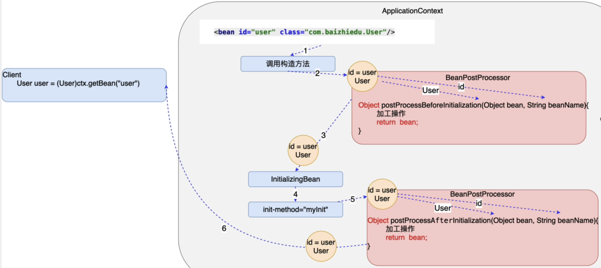

Bean的后置处理(BeanPostProcessor)
1. 作用
1. BeanPostProcessor：对Spring工厂所创建的对象进行在加工
2. BeanPostProcessor是一个接口，实现后Bean的生命周期也对应进行了一些改变，如下图。
3. 实现BeanPostProcessor接口后，需要实现该接口的两个方法
- 在创建对象并进行注入后，可通过该方法(参数bean由Spring创建的Bean实例，beanName该实例的配置文件ID)进行对应的加工处理，最终返回给Spring
- Object postProcessBeforeInitiallization(Object bean String beanName)
- 在初始化之后,可通过该方法(参数bean由Spring创建的Bean实例，beanName该实例的配置文件ID)进行对应的加工处理，最终返回给Spring
- Object postProcessAfterInitiallization(Object bean String beanName)
4. 如实际项目中用不上Spring Bean的初始化，则没必要区分是Before 还是After，只需实现其中After即可，before则可空实现。

2. 实现
/**
* Created by Ale on 2022/3/23
*/
public class Category {
private Integer id;
private String name;
public Category() {
}
public Integer getId() {
return id;
}
public void setId(Integer id) {
this.id = id;
}
public String getName() {
return name;
}
public void setName(String name) {
this.name = name;
}
@Override
public String toString() {
return "Category{" +
"id=" + id +
", name='" + name + '\'' +
'}';
}
}
public class MyBeanPostProcessor implements BeanPostProcessor {
@Override
public Object postProcessBeforeInitialization(Object bean, String beanName) throws BeansException {
return bean;
}
@Override
public Object postProcessAfterInitialization(Object bean, String beanName) throws BeansException {
// Bean的后置处理会为当前工厂所配置每一个对象进行处理
if(bean instanceof Category){
Category category = (Category) bean;
category.setName("xwb");
}
return bean;
}
}
<!-- Bean的后置处理会为当前工厂所配置每一个对象进行处理 -->
<bean id="myBeanPostProcessor" class="org.example.spring.beanpost.MyBeanPostProcessor"/>
<bean id="category" class="org.example.spring.beanpost.Category">
<property name="id" value="10"/>
<property name="name" value="xjr"/>
</bean>
<bean id="user" class="org.example.spring.User"/>